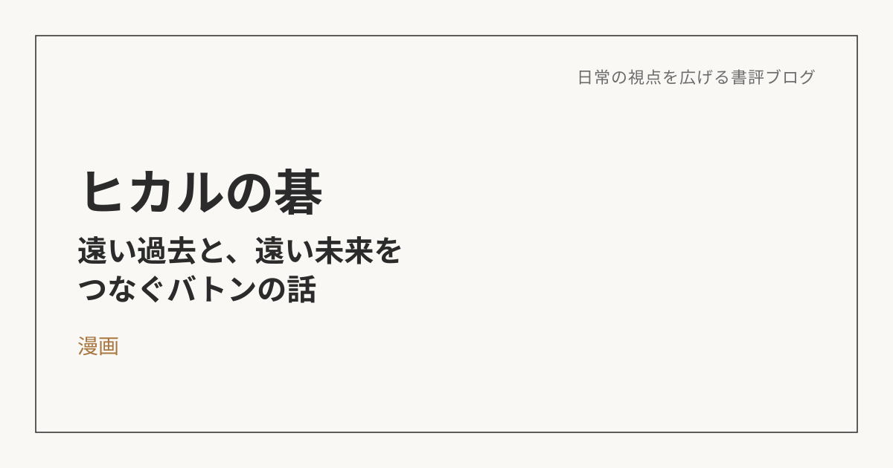
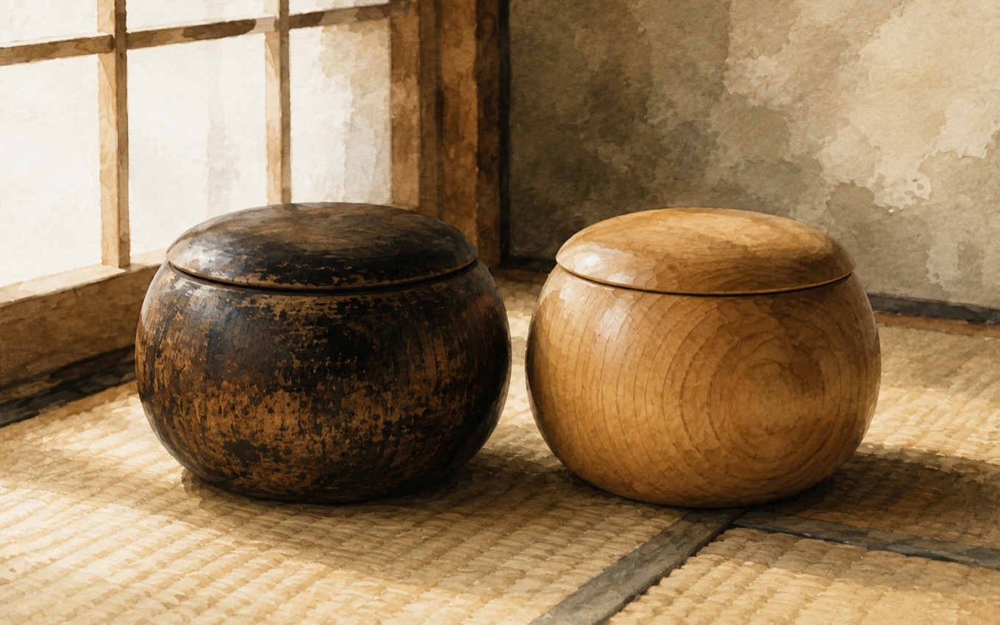

ヒカルの碁――遠い過去と、遠い未来をつなぐために
この本について
先日、この書評ブログでも一度取り上げた『ヒカルの碁』（原作・ほったゆみ、作画・小畑健）を、もう一度別の角度から解釈してみようと思う。前回は、AIとの向き合い方という切り口で、佐為とヒカルの関係を「意識の中の相棒」として読み解いた（前回の記事はこちら）。今回は、同じ物語の中にある、もう一つのテーマ――「継承」と「他者との関係」について書いておきたい。
佐為は、なぜ千年も一人で打てなかったのか
物語の中で、佐為は千年もの間、この世をさまよい続けてきた棋士として描かれる。彼はヒカルに出会う以前にも、江戸時代の棋士・虎次郎（のちの本因坊秀策）に取り憑いていたが、そこでも自らの意志だけで「神の一手」に辿り着くことはできなかった。読みながらふと浮かんだのは、なぜ佐為ほどの知識と経験を持つ存在が、単独ではゴールに届かなかったのか、という問いだった。
人生は「ゴール」ではなく「リレー」だったという気づき
その答えとして自分なりに腑に落ちたのは、佐為の存在は「神の一手を極める主人公」なのではなく、過去（虎次郎）から未来（ヒカル）へとバトンを渡すための、いわば中継地点だったのではないか、という見方だ。
これは、自分の仕事や日々の取り組みを振り返るときにも重なる感覚がある。自分が何かを完成させ、すべてを成し遂げることだけが人生の意味ではなく、未完成なままでも、次の誰かに意志やバトンを渡せること自体に、意味があるのかもしれない。今取り組んでいる仕事や、積み重ねている記録も、いつか自分の手を離れて誰かの役に立つかもしれないと思うと、目の前の一つひとつへの向き合い方が変わってくる。
なぜアキラという存在が必要だったのか
物語の中で、ヒカルにとってのライバルである塔矢アキラの存在も、あらためて読み返すと重要な意味を持っていた。「二人の天才が出会わなければ、神の一手には近づけない」という物語の中の言葉の通り、囲碁という営みは一人だけでは完成しない。相手が最高の一手を打ってくるからこそ、自分の中の最高が引き出される。
仲良く肩を並べる関係ではなく、互いに削り合うような緊張感のある関係だからこそ、一人では超えられない限界を超えていける。この構図は、自分にとっての「個」もまた、他者との関わりの中でしか完成しないのだということを、あらためて考えさせられた。
「継承」を、自分の日常に置き換えてみる

佐為が虎次郎からヒカルへ、そしてヒカルがいつか誰かへとつないでいくように、自分が今持っている知識や経験、積み重ねてきた記録も、いつか誰かに渡していくものになるのかもしれない。
それは大それた使命感を持つ必要はなく、日々の仕事の中で、自分の理解をきちんと言葉にして残しておくことや、誰かの問いに丁寧に向き合うことの延長線上にあるのだと思う。自分のためだけに完結させるのではなく、次の誰かに渡せる形にしておく、という意識を持つだけで、日常の仕事の見え方が少し変わる。
今日の一手を打つ、ということ
佐為が千年かけても辿り着けなかった「神の一手」は、ヒカルという次の走者に託されて、初めて現実の一局として打たれた。焦って自分一人で何もかもを完成させようとしなくていい。今日という盤面に、自分なりの一手を打つこと。それが、これまで積み重ねてきたものへの感謝であり、この先の誰かへの贈り物になる。そう思えるようになったのは、この物語を読み返して得られた、一番の収穫だった。
※本記事はNotionに書き溜めた読書メモをもとに、AIの編集サポートを受けて構成しています。